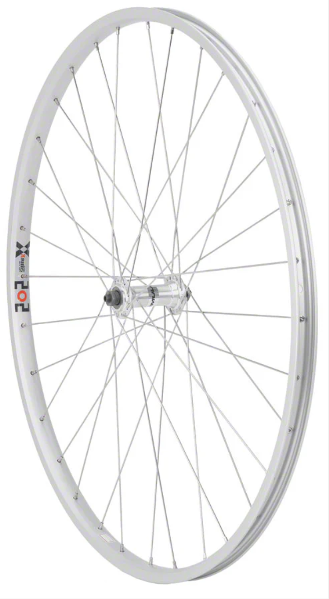
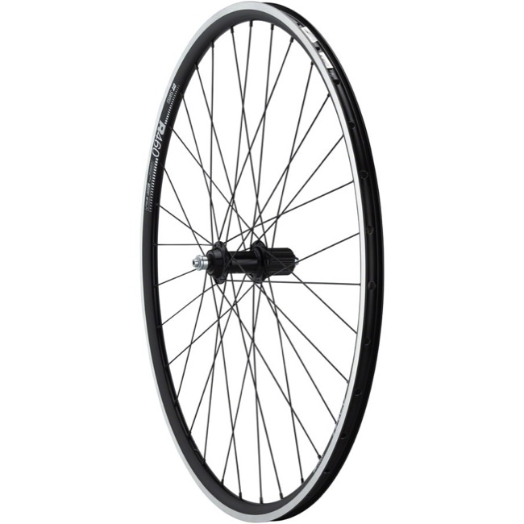
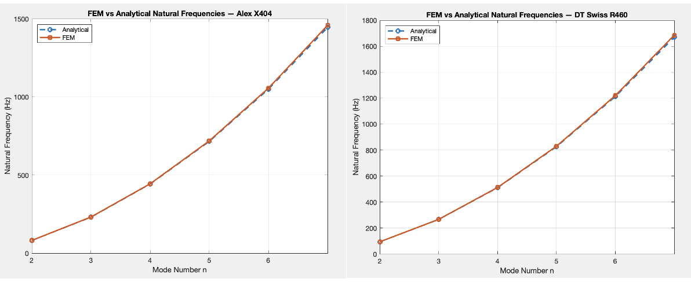
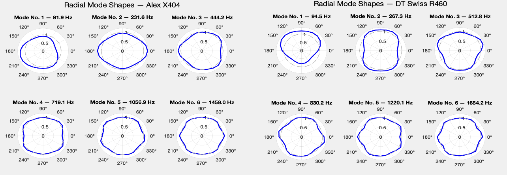
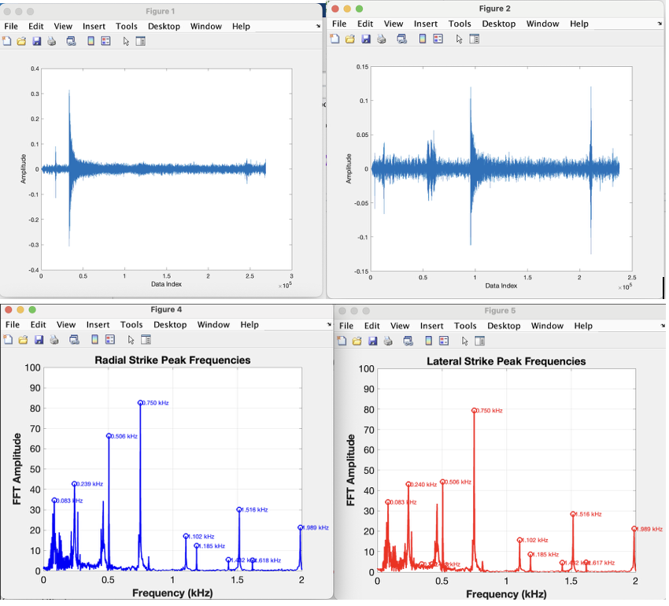

09 · ME 363
A finite element beam model, validated to under 1% error against an analytical ring solution, used alongside acoustic hammer-strike testing to back out the real radial bending stiffness of two bicycle rims - and to show, with real data, why a double-wall rim is stiffer than a single-wall one.
Objective
Bicycle rims have complex cross-sections and structural connections, which makes their radial bending stiffness difficult to estimate from geometry alone. Dynamic testing offers a way around that: measure a rim's natural frequencies, compare them to a vibration model, and back out an effective bending stiffness EI - all without cutting the rim apart. This project built and validated a finite element beam model of a bicycle rim in MATLAB, then combined it with acoustic hammer-strike testing on two real rims to extract and compare their actual radial bending stiffness. The approach follows the method described by Ford, Peng, and Balogun in "Acoustic Modal Testing of Bicycle Rims," which classifies rim vibration into radial bending modes - the rim vibrating in its own plane - and lateral-torsional modes, where it vibrates out of plane.


The two rims tested - Alex X404, single-wall (R = 0.307 m, M = 0.594 kg), and DT Swiss R460, double-wall (R = 0.304 m, M = 0.459 kg)
Finite Element Model
The rim was approximated as a closed ring of N interconnected straight beam elements, each node carrying horizontal, vertical, and angular displacement as its three degrees of freedom. The MATLAB code assembled global mass and stiffness matrices from these elements, then solved the resulting generalized eigenvalue problem to extract natural frequencies and mode shapes. Radial displacement at each node was recovered by projecting the horizontal and vertical DOFs onto the local radial direction, and the first mode - a zero-frequency rigid-body rotation with no actual deformation - was dropped, consistent with the ring theory used by Ford et al. Because a circular ring is axisymmetric, each flexible mode above the rigid-body mode appears as a repeated pair of identical frequencies; only one frequency from each pair was kept for comparison.
A convergence study determined how many elements were actually needed. Too few elements make the ring behave like a coarse polygon rather than a smooth circle, inflating the frequency error; too many waste computation for no real accuracy gain. The target was under 1% error against the analytical radial vibration solution across modes 2 through 7.
| N (elements) | Max Error, DT Swiss R460 | Max Error, Alex X404 |
|---|---|---|
| 10 | 19.67% | 19.66% |
| 15 | 3.33% | 3.33% |
| 20 | 1.63% | 1.64% |
| 22 | 1.19% | 1.20% |
| 24 | 0.89% | 0.90% |
| 25 | 0.78% | 0.78% |
N = 24 was selected as the minimum element count that cleared the 1% target for both rims - the smallest model that stays accurate rather than the largest one available, which keeps every downstream mode-shape and stiffness calculation as cheap as it can be without sacrificing accuracy.
Model Validation
With N = 24 fixed, the FEM natural frequencies for modes 2 through 7 matched the analytical radial vibration solution closely for both rims - errors stayed at 0.26-0.60% for the Alex X404 and 0.26-0.89% for the DT Swiss R460, rising only slightly at the higher mode numbers where the beam-element approximation of the smooth ring geometry gets proportionally coarser relative to the deformation wavelength.

FEM natural frequencies overlaid on the analytical solution, modes 2-7, for both rims - the two curves are visually indistinguishable at this scale
The mode shapes themselves confirm the physics is being captured correctly, not just the frequency numbers. Mode 2 produces an elliptical deformation pattern with two alternating regions of inward and outward displacement around the rim; Mode 3 produces three; Mode 4, four; and so on up through Mode 7 - in every case the number of deformation waves around the circumference matches the mode number exactly, with lower modes showing longer, more pronounced waves and higher modes showing shorter, more closely spaced ones.

Radial mode shapes as scaled polar plots - the number of alternating inward/outward lobes matches the mode number exactly for both rims, confirming the FEM is capturing genuine radial ring behavior
Acoustic Modal Testing
Each rim was struck with a hammer in two directions - radially, to excite the in-plane bending modes of interest, and laterally, as a comparison to help separate radial-bending resonances from out-of-plane lateral-torsional ones - while a smartphone running the Recorder Plus app captured the resulting sound. Three trials were run per rim per strike direction. Each recording was cropped to the window containing the main impact response and its decay, removing quiet regions and background noise, then converted to the frequency domain with a Fast Fourier Transform to reveal the resonance peaks.
Not every peak in a spectrum is a usable radial-bending data point. Peak selection followed three criteria: the peak had to appear clearly in the radial-strike spectrum specifically, it had to repeat across multiple trials where possible, and it had to follow the expected frequency spacing predicted for radial ring modes - since an FFT spectrum shows where resonances occur but says nothing on its own about which mode number a given peak actually corresponds to.

Recorded impact waveform (top) and the resulting FFT spectrum with labeled peaks (bottom) - radial and lateral strikes are compared to separate in-plane bending resonances from out-of-plane ones
Extracting Bending Stiffness
The analytical radial natural frequency of a ring depends on the mode number n, the rim radius R, the total rim mass M, and the radial bending stiffness EI:
fn = Cn · √(EI / (2πR³M)), where Cn = n(n² − 1) / √(n² + 1)
EI sets the overall scale of the frequencies, while the mode number n controls how they're spaced relative to each other - which makes that spacing a useful check before fitting anything. The theoretical ratio between Modes 2, 3, and 4 is C2:C3:C4 = 1 : 2.83 : 5.42. The selected measured peaks for the double-wall rim (156.9, 436.4, 826.1 Hz) gave a ratio of 1 : 2.78 : 5.27 - very close to theory. The single-wall rim's peaks (83.3, 264.9, 506.0 Hz) gave 1 : 3.18 : 6.07, following the same general trend but with a noticeably larger deviation at Mode 2, flagging that peak as the least reliable of the three before any stiffness value was even calculated.
With the mode assignments checked, EI was found by trial and error in MATLAB: sweep an assumed EI value through the analytical frequency equation, compare the predicted Mode 2-4 frequencies to the measured ones, and keep the EI that minimizes the average percent error. This produced final stiffness estimates of 130.57 N·m² for the single-wall Alex X404 and 267.89 N·m² for the double-wall DT Swiss R460.
| Rim | Mode | Measured (Hz) | Calculated (Hz) | Error |
|---|---|---|---|---|
| Single-Wall (Alex X404) | 2 | 83.3 | 93.3 | 12.01% |
| 3 | 264.9 | 263.9 | 0.38% | |
| 4 | 506.0 | 506.0 | 0.00% | |
| Double-Wall (DT Swiss R460) | 2 | 156.9 | 154.3 | 1.66% |
| 3 | 436.4 | 436.4 | 0.00% | |
| 4 | 826.1 | 836.8 | 1.29% |
The double-wall rim's fit is strong across all three modes, none above 2% error, which gives real confidence in its 267.89 N·m² stiffness estimate. The single-wall rim's Modes 3 and 4 fit just as well, but Mode 2 carries a real 12% error - consistent with the ratio check that already flagged it as the weakest data point. Rather than drop it, that peak was kept and reported honestly alongside the stronger modes, since the overall fit still held together well on the higher, more reliable modes.
Taking the ratio of the two stiffness values: 267.89 / 130.57 = 2.05 - the double-wall rim is roughly twice as stiff in radial bending as the single-wall rim. That's physically exactly what you'd expect: a double-wall cross-section places more material further from the neutral axis, which increases the second moment of area and, with it, bending stiffness - the same reason an I-beam outperforms a solid rectangular bar of equal cross-sectional area. Getting a measured result that lines up this cleanly with basic beam theory is a strong sign the whole pipeline - FEM, experiment, and stiffness fit - is measuring something real.
Why This Method Works
The core value of this approach is that it turns a property that's genuinely hard to calculate from geometry - radial bending stiffness of a rim with spoke holes, valve holes, and a non-uniform cross-section - into something you can measure directly with a string, a hammer, a bicycle rim, and a microphone. The FEM model does the heavy lifting of connecting geometry to frequency in a way a closed-form formula can't for a shape this complex, and the acoustic test supplies the real, physical data point that the model gets calibrated against.
The mode shapes aren't just a nice visualization - they're the safeguard that makes the stiffness numbers trustworthy in the first place. An FFT spectrum only tells you where a resonance peak sits, not which mode number produced it, and assigning a measured peak to the wrong mode number will silently produce a wrong EI value even if every line of code and every equation is correct. Checking the measured frequency ratios against the theoretical Cn spacing, and confirming the FEM mode shapes show the expected number of alternating lobes, is what turns "a peak in a spectrum" into "a verified radial bending mode" before it ever gets used to calculate a stiffness value.
The remaining error has clear, identifiable sources rather than being unexplained noise: the analytical model assumes an ideal uniform ring while real rims have spoke holes, valve holes, and manufacturing variation; acoustic impact testing is sensitive to strike location and direction, microphone placement, support conditions, and background noise, none of which were rigidly controlled with dedicated fixturing; and some spectral peaks likely reflect a mix of radial-bending and lateral-torsional behavior rather than a pure radial mode. None of that erases the result - the double-wall rim's clean fit and the physically sensible 2.05x stiffness ratio both hold up despite these limitations.
Reflection
A frequency match alone doesn't prove a mode assignment is correct - it just proves a number lines up. Checking the measured frequency ratios against the theoretical Cn spacing, and cross-referencing against the FEM mode shapes, is what actually validates that a spectral peak represents the radial mode it's assumed to be before it gets used to calculate anything.
The convergence study wasn't a formality - it's what justified using the smallest model that still met the accuracy target instead of just running the largest one available. Picking N = 24 over a coarser or needlessly finer mesh is a concrete, defensible engineering decision, not a default setting.
Reporting the single-wall rim's 12% Mode 2 error honestly, rather than quietly dropping it, made the overall result more credible, not less - the ratio check had already flagged that exact peak as unreliable before the fit was even run, and the higher modes still produced a physically sensible stiffness value despite it.